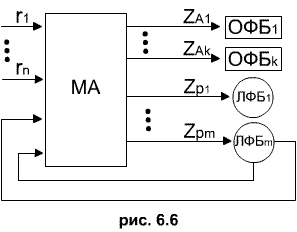

Микропрограммный автомат.
Принцип функционирования микропрограммного автомата удобно рассмотреть во взаимодействии с управляемыми им функциональными блоками (ФБ). При этом среди ФБ выделим 2 типа блоков (рис. 6.6) : операторные (ОФБ) и логические (ЛФБ), для включения которых микропрограммный автомат (МА), используемый в качестве ЦБУ (центрального блока управления), вырабатывает последовательность воздействий zAi zPi соответственно.

При воздействии на ЛФБj вырабатывается одно из двух возможных значений проверяемого параметра pj микропрограммного автомата. Следовательно, на вход pj воздействие может поступить лишь в том случае, есои имеется воздействие на выходе zpj. Поэтому все входы УА (управляющего автомата) разделяют на 2 группы : внешние r1, ... , rn и внутренние p1, ... , pm. Выходы zp1, ... , zpm назовем внутренними выходами, а zA1, ... , zAk - внешними.
Наличие зависимости поступления воздействия на внутренние входы МА от его входных воздействий является одной из основных особенностей МА. Второй основной особенностью МА является то, что при неизменном состоянии внешнего входа автомат вырабатывает последовательность сигналов на основных выходах.
Следует заметить, что в частном случае в УА могут отсутствовать ЛФБ. Тогда МА при определенном состоянии внешнего входа вырабатывает "жесткую" последовательность воздействий на ОФБ, а при наличии нескольких внешних входов - несколько таких последовательностей.